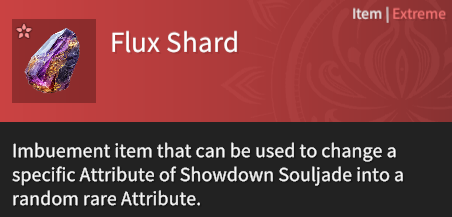
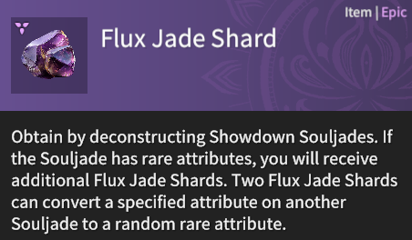
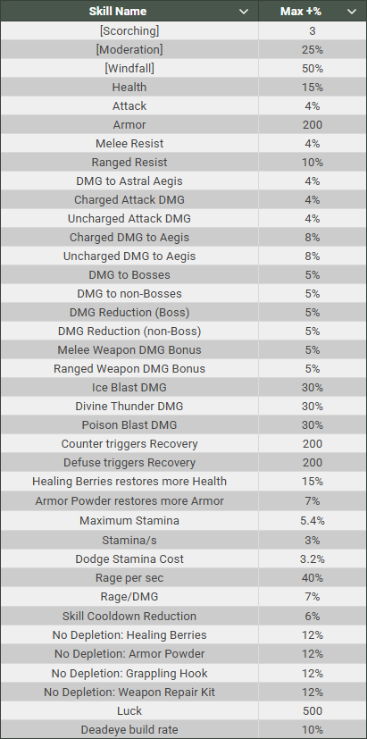

Showdown Level
Showdown level affects your base attack, health, and armor.
You gain +1 Base Attack, +5 Health and +5 Armor for every Showdown level you have.
After level 80, you gain an additional +1 Base Attack, +5 Health and +5 Armor per Showdown level.
For example, if you are at Showdown level 85, you'll have +90 (342 Total) Base Attack, +450 Health and +450 Armor.
It also determines if you deal/take more or less damage in a mission based on its Recommended Level, which is known as Level Suppression.
Currently, the ultimate goal is to reach the Max Enhancement Level. You can view this on the mission select screen on the bottom-left.

Increasing Your Showdown Level
You can increase your Showdown Level by consuming fatigue in any missions.
Try to quickly unlock Nirriti's Ruins by completing its unlock quest.
Ruins stages consume the most fatigue (45), aren't affected by your Showdown Level and can be completed quickly with a good Trio.
I'd recommend waiting until level 100 to run Enigma Domain, so you're not suppressed by any of the later enemies.
Hero Level
There are two methods to increase your hero's level: by completing Showdown missions and by using Alchemical Crystallized Souls. Note that each hero has a maximum level cap of 20.
Mission Experience
The experience gained from missions scales with your Showdown level relative to the mission's recommended level. Having a much higher level than recommended will reduce the experience earned. Therefore, it's advisable to farm missions within 25 levels of your current level if your goal is to efficiently gain hero levels. In terms of the best mission to farm, it is believed to be early Stages of Nirriti's Ruins.
Alchemical Crystallized Souls
Alchemical Crystallized Souls (ACS) are acquired by beating Showdown missions for the first time with certain heroes.
They are useful for boosting hero levels on characters outside your main three that you don't plan to grind heavily.
However, I don't recommend using ACS on characters you intend to play frequently, as you'll naturally gain their levels over time.
To max a hero from level 1 to 20, it requires a total of 117 ACS.

Level Unlocks
You will acquire an upgrade to your at every level. These upgrades are permanent, but only affect the corresponding hero.
Level 1: AoE Attack
Hero unlocks their AOE attack that generally helps a lot with clearing out smaller enemies.
Level 1: Defuse Counterattack
Hero will be able to use a special dodge that when successful at nullifying an attack, enables a melee attack that greatly damages astral aegis.
Level 1: Ranged Weapon Parry
Hero's ranged weapon will be able to parry focus attacks and use a counterstrike.
Level 2: Deadeye
Hero's ranged weapon will accumulate Deadeye with successful shots. Deadeye mode at full charge will enable special buffs.
Level 3: Aegis-Break Martial Skill
Hero will be able to use a melee attack that greatly damages enemies' astral aegis.
Level 4: Ranged Weapon Martial Skill
Hero's ranged weapon will unlock a special attack while in Deadeye mode.
Level 5: Weapon Upgrade
Hero's melee weapon is upgraded from blue to purple permanently, giving a 16.7% damage increase.
Level 7: Armor Upgrade
Hero's armor is upgraded from blue to purple permanently, giving an additional 250 armor.
Level 9: Ranged Weapon Enhancement
Hero receives a new ranged weapon skill, usually making their ranged weapon more efficient at what it does.
Level 13: Ranged Weapon Upgrade
Hero's ranged weapon is upgraded from blue to purple permanently, giving a 16.7% damage increase.
Level 17: Ranged Weapon Infinite Range
Hero's ranged weapon will no longer suffer from a range penalty from any range.
Souljade Encyclopedia
Souljades
Epic and Legendary Souljades can only drop from one of two loot pools. These loot pools are the Common Pool and the Special Pool.
Common Pool
The Common Pool contains a majority of all Epics and a small portion of Legendaries currently in Showdown. These souljades can be dropped from any mission and are recommended to be farmed in:
- Any Stronghold Assault mission
- Enigma Domain - Topaz
- Yama's Abyss
- Any Speedrun mission you can complete consistently
You can see all of the Souljades that can drop from a mission by clicking the
 icon next to the mission's name in the mission select screen.
icon next to the mission's name in the mission select screen.

Special Pool
The special pool contains Epics and Legendary Souljades that can only be dropped from specific missions at certain difficulties. You can also acquire them from Souljade Conversions, but to increase your chances it is best to farm their specific mission.
You can see the special pool of a mission in the stage select screen to the left of the confirm button and hovering over the Souljades displayed.

For Souljades you haven't acquired before, you can check them out in the Narakapedia section to see where they drop.

Element Wielding
Element Wielding is the acquisition of Souljades with either +1 Ice-Wielding, +1 Thunder-Wielding or +1 Poison-Wielding. By equipping one with an element, it gives you unique effects. These effects stack up to +6.
Ice-Wielding
Ice-Wielding can be quite confusing, but it can be very helpful to have built up as you enter Holoroth. It does 2 things:
- Makes it harder for you to be frozen, by decreasing your Frostbite acquisition from all sources including Frost Omens, Matron of Yushan's attacks, or certain Souljades.
- Gives access to the Elemental Burst, Ice Blast. The amount of stacks of Wielding determines the damage of that element, starting at 2/7ths the damage at +1 and 7/7ths of the damage at +6. Elemental Bursts occur occasionally as you damage an enemy, with heavy hitting attacks building them up faster.
Thunder-Wielding
Thunder-Wielding is quite similar, but differs in that it:
- Makes it take longer for you to suffer from Divine Thunder, by decreasing your Thundershock acquisition rate.
- Gives access to the Elemental Burst, Divine Thunder.
- Increases the damage to enemies from countered Divine Thunder (Thunder Counter).
Poison-Wielding
Poison-Wielding acts differently than the others in that it only:
- Gives access to the Elemental Burst, Poison Blast.
Attributes
Located below your Souljade's effects will be your Attributes. The number of Attributes present by default varies depending on the Souljade's rarity.
- Common Rarity = 0 Attributes
- Rare Rarity = 1 Attribute
- Epic Rarity = 2 Attributes
- Legendary Rarity = 3 Attributes
You can acquire up to 4 Attributes on a Souljade through a process known as Recasting. In terms of Attributes you want to go for, generally you want to go for what ever increases your damage. [Windfall] if you can manage to acquire it is one of the best Attributes currently in the game. It will work with any build regardless of what you're aiming for.
Attributes of Interest
Attack is a reliable Attribute to use on any build. For Elemental Builds, you'll want to go the Elemental DMG Bonus that matches. So for example, an Ice build, would often want to focus on Ice Blast DMG. Despite its name, it applies to everything that is Ice Element Damage.
Rare Attributes
Rare Attributes are Attributes with '[]' brackets around them. As the name suggests, they are much rarer to acquire than normal Attributes. However, they tend to have more active effects than other Attributes. They can be acquired in all the same ways as normal Attributes, however, you can have duplicates.
- [Windfall] makes all of the other Attributes on the same Souljade stronger by 30-50%.
Example: Attack +4% with Windfall +30% will be equal to Attack +5.2% - [Moderation] reduces the cooldown of your ability by 15-25%
whenever you activate an Elemental Burst on an enemy.
Adds up to a cap of 100% from multiple [Moderation]s for instant cooldown on activation. - [Scorching] makes your next melee attack following a successful parry apply an explosive burning effect to nearby enemies. Scales in levels, with a total cap at level 12 and a cap per Souljade at level 3.
Souljade Conversion
The Showdown Souljade Conversion menu allows you to convert Souljades you don't want
into Souljades that you would possibly want at random.
You can only receive Souljades from conversion that you have unlocked from completing their corresponding mission.
You can see what you have unlocked by clicking on the  button next to the convert button.
button next to the convert button.
There are two forms of conversion: Basic and Advanced
Basic Conversion
Basic Conversion allows you to convert 20 rare and common rarity Souljades into Epics or Legendaries.
Chance of Epic = 90%
Chance of Legendary = 10%

Advanced Conversion
Advanced Conversion allows you to convert 3 Epics into a random Epic Souljade or 3 Legendaries into a random Legendary Souljade.

Recasting
Recasting is the process of shuffling Attributes on a Souljade.
Recasting Strategy
Recasting should be done after exhausting other progression methods,
as it consumes valuable Epic & Legendary Souljades and
 Carved Crystals, making it a resource-intensive process.
Carved Crystals, making it a resource-intensive process.
When approaching Recasting, particularly when you're aiming for rare attributes you want to go through a 3-part process.
Getting the Souljades
How to find and acquire specific Souljades.
Steps:
- Select a build that you want to work towards.
- Go to: Preparation -> Equip Souljades -> Souljade Conversion ->
to see where each individual Souljade drops from.
- Complete runs of their respective missions until you acquire all of them.
Your First Rare Attributes
Optimal Way to Acquire your First Rare Attributes.
Steps:
- To begin, I would first recommend that you recast in bulk
- Use Shrouded Jades to increase the number of Attributes on a Souljade up to 4.
- Begin with selecting a Souljade, choose Enhance, then select the Attribute furthest from max.
- For example, if you have Attack +3.2% (max 4%), Ranged Resist 6% (max 10%), Counter triggers Recovery +170 (max 200) and Health +7.5% (max 15%), you would want to Auto Recast Health first.
- For information on what the max % of each attribute is, check out the max attributes table below.
- Next up, select Auto Recast, turn off Auto Guarantees and make sure no attributes are selected (other than Rare Attribute; default).
- If the Auto Recast stops, it is because it either acquired a rare attribute or it reached the guarantee.
- If it reached the guarantee, select the Attribute that is closest to max and recast it into one of that build's preferred Attributes.
- If you already have all of the preferred Attributes, then either use the guarantee on another Souljade, or select one of the placeholder Attributes.
- Repeat this process until you've successfully acquired a Rare Attribute. This will usually happen within 2 guarantees.
- If the Rare Attribute you acquire, is not one that the build recommends (or that you have in mind), don't fret you can fix it.
- This will require manual recasting, do not use Auto Recasting for this part.
- Select the rare attribute in Attribute Recast and do a Recast.
- If the resulting attribute isn't at max value or the rare attribute you were looking for, try again.
- Repeat this until you either get the rare attribute you're looking for or a maxed non-rare attribute.
- If you've managed to get a maxed attribute, you'll have to complete this part over again for your next lowest attribute.
- Before moving on to the next step, I would advise completing this one on all 6 Souljades to where they all have a rare attribute that you want.
Your Second Rare Attributes
The longest part of the Recasting process.
Steps:
- For builds that only prefer 6 Rare Attributes, you can skip this entire section.
- Like getting your first rare, this part has a similar process, however, when there is a rare attribute present on a Souljade, you can't get another through regular recasts.
- The only way to place another one on it is by imbuing with Flux Jades or 2 Flux Jade Shards.
- 
- 
- Flux Jades are given out rarely through events or reaching certain milestones in Showdown, such as reaching a certain Season Score.
- Flux Jade Shards can be acquired by deconstructing Souljades with rare attributes on them.
- Deconstructing a Souljade gives 1 Flux Jade Shard per Rare Attribute.
- So essentially getting a 2nd Rare Attribute on a Souljade is twice as expensive.
- Begin by selecting a Souljade you don't want and Auto Recast it until a Rare Attribute appears.
- After that, simply deconstruct it like you would normally getting Souljade Fragments.
- Similar to the previous part, you want to target your lowest percentage Attributes to turn into Rare Attributes.
- If the Rare Attribute you get is not what you want, then you either recast to a maxed non-Rare Attribute (if needed) or leave it to be imbued later.
- Repeat this until all Souljades have your desired Rare Attributes.
Max Attribute Values
Key Notes
- The % value of an Attribute that is recasted onto a Souljade is influenced by the prior Attribute's value.
Example: Attack +3.2% will convert into Health +12% which is 80% of the max value. - Try to recast on Souljades with the Element Wielding type that you want to preserve Elemental Essence consumption.
- Save Flux Shards for when you're going for more than one Rare Attribute, as you can't recast more than one Rare Attribute on the same Souljade.
- Rare Attributes are assigned a random % when you acquire them. When you recast them away they give a random % Attribute as well.
Curios
During the 2nd half of each season, a new mission type known as Tempered Inferno will open.
This mission will grant access to new equipment known as Curios.
There are 2 categories of Curios: Yin and Yang.
Yin Curios can only be equipped in the bottom-most slot and are generally defensive in nature.
Their acquirable attributes are more utility and defensive focused as well, giving options such as Damage Reduction or Luck.
Yang Curios can only be equipped in the top-most slot and are generally offensive in nature.
Their acquirable attributes are focused on damage output, offering additional Attack and Damage Bonuses.
There are also 2 types of Curios: Hero-Exclusive and Universal.
Hero-Exclusive Curios can only be equipped by their respective hero, but offer powerful ability-changing effects,
such as Kurumi being able to attack while her Skill is active and gaining access to new strong charged attacks.
Universal Curios can be equipped by any hero and usually further boosts the effects of Souljades synergistic with a season's Potential Tree.
An example being Fiery Lotus Bell, which gives a large accumulation boost for builds focused on Blossom Blasts, a meta introduced in Season 2.5.
Acquiring Curios
Curios can be acquired in 2 ways:
- As drops from Tempered Inferno.
- By crafting with Chaos Stones.
You can obtain Chaos Stones either as a drop from Tempered Inferno and from logging in weekly. Curio Crafting can be done at random with an 80% chance to be Epic, 19% chance to be Legendary or 1% chance to be Extreme. Curio Crafting can also be targeted, with the chances of it being Epic, Legendary or Extreme scaling with your Crafting Level for that specific Curio.